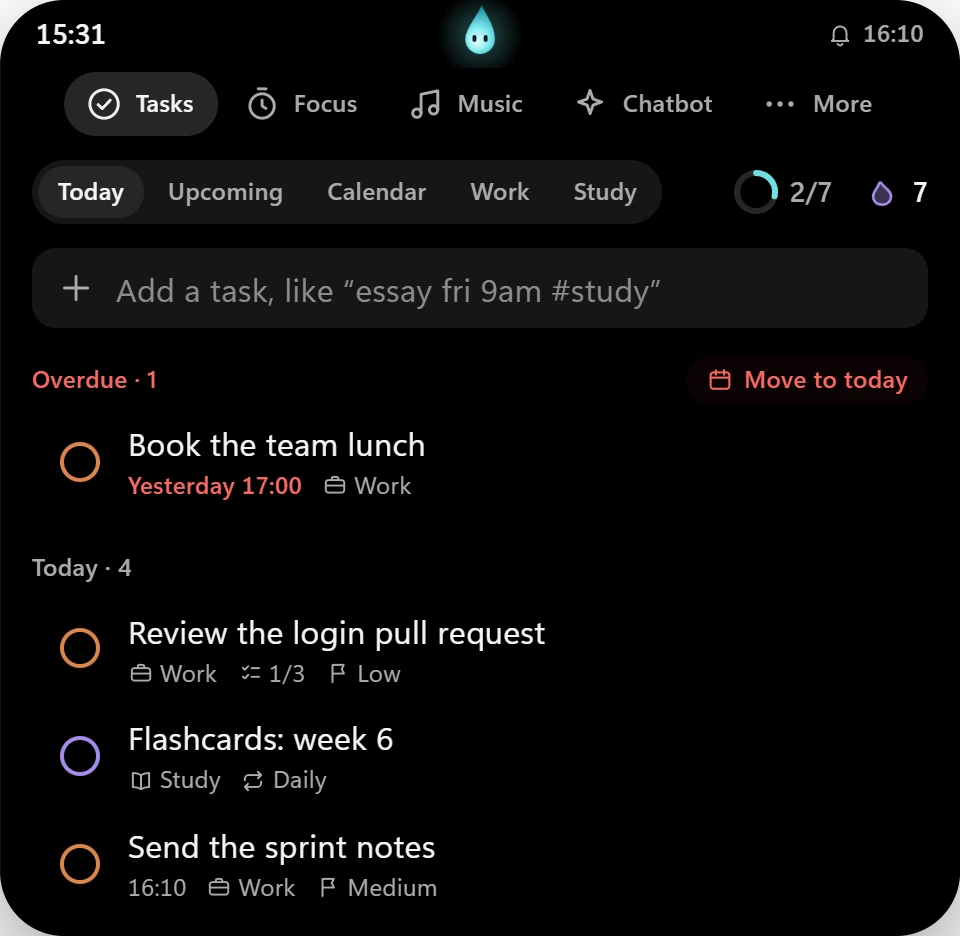
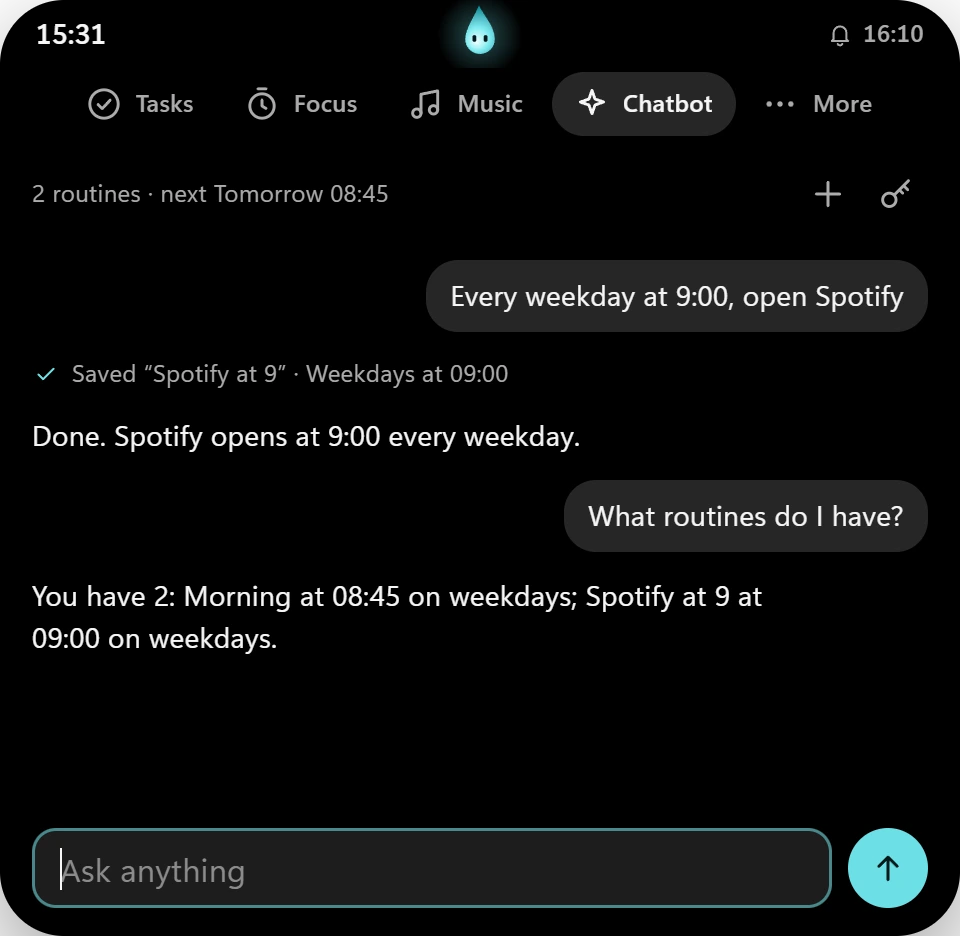
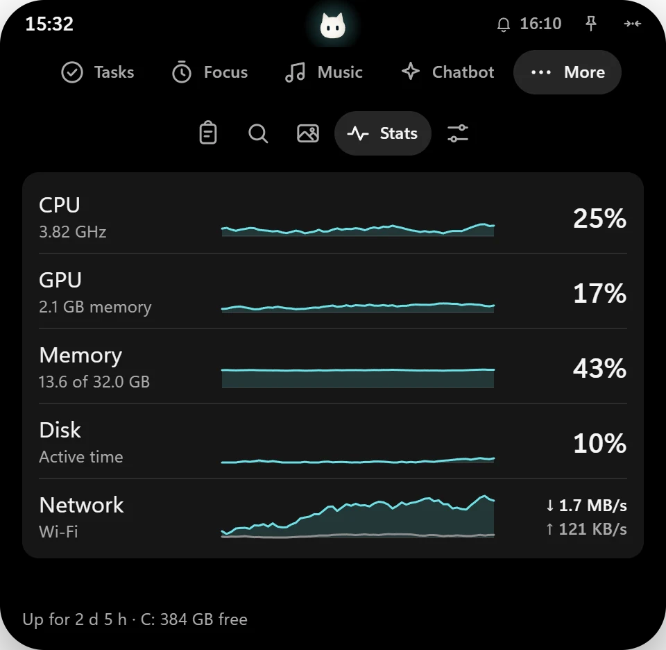

That's Tama up there. Hover it, or scroll down on it. That's Tama up there. Tap it.
A Dynamic Island for Windows, with a soul inside.
Tama sits at the top of your screen and shows what's happening now: a focus timer, the song that's playing, the next thing due. Hover it for quick controls. Click it to plan your day.
Plan the day without leaving the desktop.
Today, the next seven days and a month calendar, with separate Work and Study lists. Tasks take steps, notes and repeats, remind you when they're due, and late ones move to today in one click.
What it understands
#work#study- Which list
!!!!!!or!high- Priority
todaytomorrowfrinext week- Day
9am15:30at 3- Time, which sets a reminder
in 30 minin 3 days- From now
dailyevery weekdayevery fri- Repeat: finishing one schedules the next

A focus timer you can see without looking for it.
Pick a task and start 25 minutes. The countdown stays in the closed island, the soul closes its eyes, and Tama offers a break when time is up. Focus minutes add up per list and keep your study streak going.
Lyrics that keep time with the song.
Tama shows what's playing in any app that reports to Windows, like Spotify, a browser tab or most players, with play, pause, skip and a seek bar. Lyrics come from LRCLIB and scroll with the song. Tap a line to jump to it.
These songs, and their words, were made up for this page.
Routines, set up by asking.
Tell the chatbot what to open and when. “Every weekday at 9:00, open Spotify.” “Move it to 8:30.” “Run my morning routine now.” A routine opens apps and web pages at a time you choose, on the days you pick or just once.
It runs gpt-oss-120b on Groq's free tier, with a free API key you add yourself. Nothing is sent until you add one.

And the small things a desktop needs.

Make it yours. The island is the preview.
Ten accents, four themes, three styles and a few quiet backgrounds. Change them here and watch the island at the top of this page.
Your day stays on your PC.
No account and no analytics. Tasks, routines, focus history and settings live in Tama's storage on your PC. Two things go online, and only when you use them.
Lyrics, from LRCLIB
The song's title, artist, album and length, once per song. The answer is cached, so a song never goes online twice. The lyrics button in Music turns this off.
The Chatbot, through Groq
What you type, your routines and the names of matching apps, only after you add your own API key. The key stays in Windows Credential Manager.
Nothing else
Clipboard history and chats are kept in memory and gone when Tama quits. This page loads no fonts, scripts or trackers from anywhere else either.
Install in under a minute.
- Download the installer. Tama_1.0.0_x64-setup.exe, 1.5 MB.
- Run it. It installs for your account only, so it doesn't ask for admin rights.
- If SmartScreen stops it, choose More info, then Run anyway. Tama isn't code-signed yet, so Windows doesn't recognise it.
- Look at the top of your main screen. Tama starts with Windows. Turn that off in Settings or from the tray icon.
Made for Windows 11, 64-bit. It needs the WebView2 runtime, which Windows 11 already has. To uninstall: Settings, Apps, Installed apps, Tama.